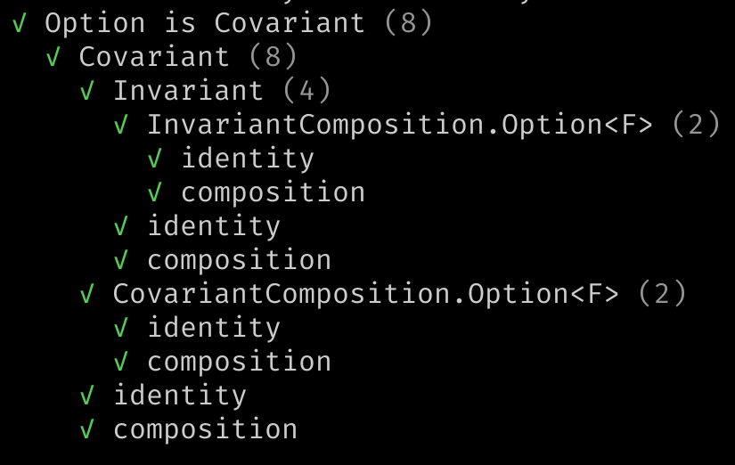

effect-ts-laws is a law testing library. Read on for instructions on usage.
Most use-cases can skip the Model section, and go directly from
Import to Usage.
To install, replace pnpm with your package manager:
# Peer dependencies:
pnpm i effect-ts @effect/typeclass
# Peer dev dependencies
pnpm i -D vitest fast-check @fast-check/vitest
# Install effect-ts-laws
pnpm i -D effect-ts-laws
import {LawSet, buildTypeclassLaws, ... } from 'effect-ts-laws'
import {testLawSets, ...} from 'effect-ts-laws/vitest'
import {Endo, Dual, ...} from 'effect-ts-laws/typeclass'
Every symbol can be imported from effect-ts-laws or
effect-ts-laws/typeclass, except functions related to law testing with
vitest. These must be imported from effect-ts-laws/vitest.
effect-ts-laws/typeclass has some complementary code for @effect/typeclass, that may be useful for your law tests, but most of the functionality you will want can be imported from two entry points:
effect-ts-laws - Everything not related to vitest.effect-ts-laws/vitest - Vitest test runners.Here is how you would check a law, in this case a tautology, and then test it:
import {Law, checkLaw, testLaw} from 'effect-ts-laws'
import {testLaw} from 'effect-ts-laws/vitest'
import {describe} from 'vitest'
const law: Law<[boolean]> = Law(
'booleans are true or false',
'∀a in boolean: a || !a',
fc.boolean(),
)(a => a || !a)
// Checking
const maybeError: Option<string> = checkLaw(law)
// Testing
describe('law tests', () => {
testLaw(law)
})
The API module index. lists all exported symbols by module.
The only abstractions are Law and LawSet. The rest of the library
consists of:
effect-ts, and some tests for fast-check.A Law is a paper-thin wrapper of the fast-check
property, and a LawSet
is a recursive data structure composed of a set of laws and their dependencies
in the form of a list of LawSets. You can read about the
Law here,
and the
LawSet here.
The typeclass and schema laws are implemented as functions that build a
LawSet from a given instance/schema under test, together with a few
arbitraries/equivalences required by the specific LawSet.
For example the Equivalence laws
are implemented as a function called equivalenceLaws which takes
options of type ConcreteGiven
and returns a LawSet with the laws ready to be tested on the given instance
under test, taken from the key F of the given options.
You create a Law using a constructor called
Law.
The LawSet constructor is also named after the type, but two more
constructors serve as syntax sugar for some common situations:
LawSet from a list of required law sets, a name, and a list of laws.LawSet.LawSet constructor except it takes only a list of LawSet
to run with no laws, and is anonymous. Sets of laws with no name are merged with their
sibling law tests and do not appear as a discrete named describe block in
vitest results.A few combinators are exported for building and filtering LawSets, for example addLaws. Filtering can be useful, for example, if you need to remove a Law from LawSet, because it is problematic for some datatype.
A law like
Monad.associativity,
is defined in such a way that every test can be run vs. three distinct
underlying types, given by the type parameters A, B, and C. The
underlying types are the type parameters of typeclasses for parameterized
types. For example, the underlying type of Option<number> is number.
You can test the laws in this manner using functions like testParameterizedTypeclassLaws if there are fault models, I.e.: ways in which your code can break, that require this type of coverage.
However seeing as this is highly unlikely, adds considerable complexity to
the API, and imitating the ancestors of this library from the Scala
and Haskell languages, the high-level typeclass law testing interface is
monomorphic, I.e.: A=B=C.
The single type we used for typeclass testing is Option<number>. Thus when
testing the Array datatype, for example, the actual type used in the tests
will be Array<Mono> ≡ Array<Option<number>>.
In some cases, this underlying type breaks the test. For example,
React functional components are functions that will only
accept a single argument of type object, simulating named arguments. The
alternative underlying type for such cases is available,and is called
MonoProps.
The monomorphic module exports can be useful when working with these underlying types.
If you map the effect-ts typeclass extends relation, you will see they form
a directed acyclic graph. You can find a diagram of this graph
below the target of this link.
effect-ts-laws typeclass laws form a parallel graph. If typeclass A extends
typeclass B, then the laws of typeclass A require that the laws of typeclass
B pass as well. For example, running an instance through the Covariant laws
will also run it through the Invariant laws.
Coverage for some fault models requires testing laws not just on the instance under test, but also on the instance when composed with another well-tested instance.
For this reason, the typeclasses that can be composed (Applicative,
Covariant, Invariant, Traversable, and Foldable), besides their
non-composed tests, are composed with an instance of the Option datatype and
run through the typeclass law tests yet again.
Besides extension and composition, there are other relations between typeclasses that need covering. These relations between typeclasses are modelled as relations between their law tests.
For example the type of the Applicative.getMonoid function is:
<F extends TypeLambda>(
F: Applicative<F>
) => <A, R, O, E>(M: Monoid<A>): Monoid<Kind<F, R, O, E, A>>
getMonoid gives you a Monoid for your datatype from a Monoid of your
underlying type. There are several fault models to cover here. Bugs
in the implementation of the datatype, for example, could lead to
a broken Monoid returned.
To cover this type of relation, the
Applicative typeclass laws
will build a Monoid using Applicative.getMonoid and run it through the
Monoid typeclass laws.
In this example, the Monoid laws are only run if a Monoid instance for the
underlying datatype has been found. Because the typeclass law tests are
monomorphic and our underlying type is Option<number>, we
always have a Monoid instance for the underlying type.
The Applicative laws are also related to the Monad laws.
If given an instance of
FlatMap
for the datatype, an extra law will be tested: flatMap consistency.
There are many such relations, check the specific laws of a typeclass to see what laws are included and under what conditions.
With typeclass laws requiring their dependencies pass, we could end up with a single law being tested more than once on the same instance, after having gotten there by different paths through the dependency graph.
For this reason laws are deduplicated before being run, so that only the minimal required set of laws is run.
Checking a law means running it inside a pure function that will return a possibly empty list of errors, with the empty list indicating the law has been satisfied.
Testing a law is the same thing, except run inside a vitest test, errors are reported as assert failure, and when the law is satisfied the test will pass.
The separation lets us check laws outside of a vitest test and with no vitest dependency.
Look here for a demo of a Node.js script that checks the Effect Array datatype without involving Vitest.
To create a law test you would:
vitest test file.getEquivalence for a higher-kinded datatype.checkLaws or testLaws.The specifics depend on the set of laws you are testing.
To build the Equivalence, Order, Bounded, Semigroup and Monoid
typeclass laws, all you need is:
For example, to test the semigroup laws work for integer addition:
import {Semigroup as SE} from '@effect/typeclass'
import {Number as NU, pipe} from 'effect'
import {semigroupLaws} from 'effect-ts-laws'
import {testLaws} from 'effect-ts-laws/vitest'
import fc from 'fast-check'
describe('Integers form a semigroup under +', () => {
const instance: SE.Semigroup<number> = {
combine: NU.sum,
combineMany: (head, rest) => NU.sumAll([head, ...rest]),
}
pipe(
{F: instance, equalsA: NU.Equivalence, a: fc.nat()},
semigroupLaws,
testLaws,
)
})
There are two laws for
Semigroup,
and they are organized in named set of laws called Semigroup. Vitest will report the following results
when running this test:
If you replace the call to testLaws
with a call to verboseLaws,
a variant of testLaws that automatically turns on the fast-check runtime verbose
parameter, you will get the same results but with the notes shown:
If your datatype is parameterized, as is for example the Option datatype, to build
laws you must provide:
For example the test the Covariant typeclass laws on the Option datatype:
import {covariantLaws, option, GivenConcerns, Mono} from 'effect-ts-laws'
import {testLaws} from 'effect-ts-laws/vitest'
import {pipe, Option as OP} from 'effect'
import {OptionTypeLambda} from 'effect/Option'
import {Covariant as optionCovariant} from '@effect/typeclass/data/Option'
describe('Option is Covariant', () => {
const given: GivenConcerns<OptionTypeLambda, Mono> =
unfoldMonomorphicGiven<OptionTypeLambda>({
getEquivalence: OP.getEquivalence,
getArbitrary: option,
})
pipe(
{F: optionCovariant, ...given},
covariantLaws<OptionTypeLambda, Mono>,
testLaws,
)
})
Vitest will show the test results so:
Because this distinction between typeclasses for concrete vs. parameterized types does not help when defining
law tests as described above, and because you usually have several instances of
several typeclasses for a single datatype, you may prefer to use the high-level
unified API for testing typeclass laws that lets you test several instances of a
single datatype in single function call. This is how the effect-ts
datatype tests
are defined.
testTypeclassLaws is the high-level interface for testing typeclass laws.
You provide the instances under test keyed by their typeclass, a getArbitrary and a getEquivalence for the datatype under test, and it will unfold these two humble functions into the typeclass law options, build the correct typeclass laws, and then test them.
Here for example we run some concrete and parameterized typeclass laws on
the Option datatype. Note how instances under test are keyed by their
typeclass name.
import {
getOptionalMonoid,
Monad,
Traversable,
} from '@effect/typeclass/data/Option'
import {Option as OP} from 'effect'
import {monoEquivalence, monoOrder, monoSemigroup, option} from 'effect-ts-laws'
import {testTypeclassLaws} from 'effect-ts-laws/vitest'
import {OptionTypeLambda} from 'effect/Option'
describe('option', () => {
testTypeclassLaws<OptionTypeLambda>({
// The required options for building typeclass laws.
getEquivalence: OP.getEquivalence,
getArbitrary: option,
})({
// Struct of of instances under test, key is typeclass name.
Equivalence: OP.getEquivalence(monoEquivalence),
Order: OP.getOrder(monoOrder),
Monoid: getOptionalMonoid(monoSemigroup),
Monad,
Traversable,
})
})
Every instance of the five we provided gets its own typeclass laws tests. Vitest will show five typeclass law sets tested, one per instance.
Some typeclass laws extend others, so for example the Covariant typeclass
laws are tested as part of the Monad typeclass law tests. Some typeclasses
are composable, so for example the Covariant typeclass law tests are run
once by themselves, and once again when composed inside of an Option:
🚧
🚧
You may want to pass parameters to fast-check because:
numRuns, or you wish to increase
numRuns to increase coverageseed and path from a failed run and would like to debug this
counterexample directly.fast-check reporting.These fast-check parameters, documented
here, can be
configured for law testing at three levels, listed by priority from highest to
lowest:
parameters argument to
the check/test functions. This will override the global and Law
configuration.parameters. The constructor
Law
will take a parameters argument as an optional argument following the
predicate. Useful for example, to reduce numRuns in the definition of a law
that is slow to test. This will override global configuration.vitest.setup.ts file, as
described here.Parameters configured at the Law lever override global configuration, and parameters
provided at the top level calls to check/test functions override both.
check* functions, like checkLaws, will ignore the vitest global
configuration as it is active only at test-time.
The schema laws self-test bad decoder test, for example, creates a counterexample in a single run using the Per check or per test mechanism described above and a seed + path recorded from the results of some other test:
// We expect the counterexample to fail
const errors = checkLaws(schemaLaws(Person), {
numRuns: 1,
seed: -1512491049,
path: '38',
})
Checking laws is exactly like testing laws, except your code does not have
to depend on the testing library vitest. Useful when you want to use this
library from code that is not test code, for example monitoring code.
You can check laws using the functions
checkLaws, or
checkLawSets,
imported from effect-ts-laws. These functions return a possibly empty list of
string errors. If the list is empty, then the laws are satisfied, or more
accurately, we failed in finding a counterexample.
checkLaw
will check a single law and return an option of a string that will be none if
the law is satisfied, or some error message otherwise.
asAssert
is a lower level interface that returns the law in the form of a fast-check property
wrapped in a fast-check assert for you to do with as you please.
Note importing effect-ts-laws/vitest behaves just like importing vitest, in
the sense that code being run from outside test code will immediately croak
complaining that:
Vitest failed to access its internal state..
You can find out more about the arbitrary
module here.
You will find there:
effect-ts datatypes like Option and Either.effect-ts temporal datatypes like Duration and
OffsetTimezone.(a: A) => F<B, Out1, Out2, In1>.Monad and Equivalence (based on sampling) instances for the fast-check
Arbitrary type.